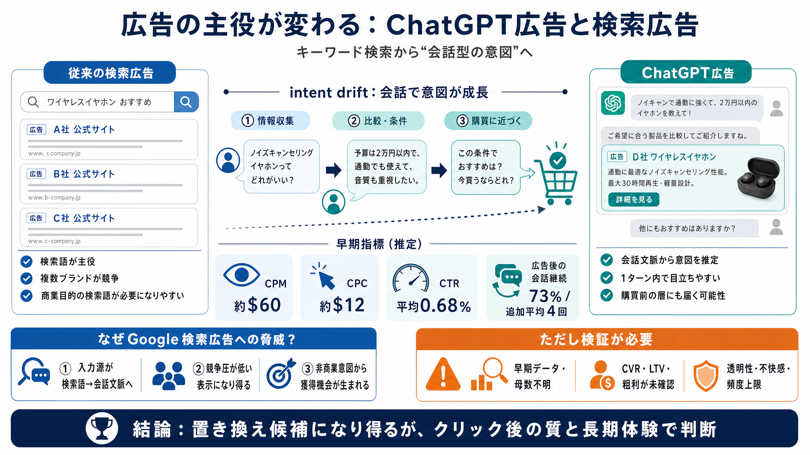

ChatGPT Ads vs Google Ads: Which Gives Better ROI in 2026?
ChatGPT Ads vs Google Ads ROI compared with real 2026 data. CPC, CPM, conversion rates, and cost-per-lead benchmarks. Fi…

ChatGPT Ads vs Google Ads ROI compared with real 2026 data. CPC, CPM, conversion rates, and cost-per-lead benchmarks. Fi…
# ChatGPT Ads Conversion Rate: 2026 Report. OpenAI began testing ChatGPT ads in the US in February 2026, initially with …
Google search ads on intent, cost, targeting, CTR, and ROI. Google Search Ads: A Side-by-Side Comparison for 2026. **The…
OpenAI forecasts that advertising could generate $1 billion in revenue starting in 2026, ramping to nearly $25 billion b…
OpenAI ChatGPT advertising plans determine your access to ChatGPT's advertising platform, budget requirements, and featu…